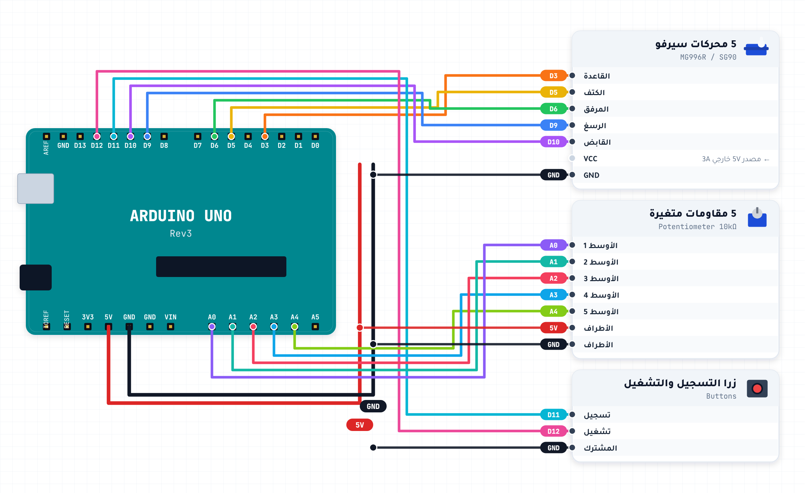

▶فيديو الشرح
خمس مقاومات متغيرة تحرك خمسة سيرفوهات، والأردوينو يسجل الحركة ويعيدها تلقائياً.
1المكونات
ARDUINO UNOboard5 محركات سيرفوMG996R / SG905 مقاومات متغيرةPotentiometer 10kΩزرا التسجيل والتشغيلButtonsأسلاك توصيلJumper Wiresلوحة تجاربBreadboard
2مخطط التوصيل

اضغط على المخطط لتكبيره · نسخة SVG عالية الدقة
| القطعة | الطرف | يوصل إلى |
|---|---|---|
| 5 محركات سيرفو | القاعدة | D3 |
| 5 محركات سيرفو | الكتف | D5 |
| 5 محركات سيرفو | المرفق | D6 |
| 5 محركات سيرفو | الرسغ | D9 |
| 5 محركات سيرفو | القابض | D10 |
| 5 محركات سيرفو | VCC | مصدر 5V خارجي 3A |
| 5 محركات سيرفو | GND | GND |
| 5 مقاومات متغيرة | الأوسط 1 | A0 |
| 5 مقاومات متغيرة | الأوسط 2 | A1 |
| 5 مقاومات متغيرة | الأوسط 3 | A2 |
| 5 مقاومات متغيرة | الأوسط 4 | A3 |
| 5 مقاومات متغيرة | الأوسط 5 | A4 |
| 5 مقاومات متغيرة | الأطراف | 5V |
| 5 مقاومات متغيرة | الأطراف | GND |
| زرا التسجيل والتشغيل | تسجيل | D11 |
| زرا التسجيل والتشغيل | تشغيل | D12 |
| زرا التسجيل والتشغيل | المشترك | GND |
3الكود
المكتبات المطلوبة (من Arduino IDE ← Sketch ← Include Library ← Manage Libraries):
- EEPROM (مدمجة)
- Servo (مدمجة مع Arduino IDE)
/* المستوى المتقدم — المشروع 6: الذراع الروبوتية خماسية المحاور مع تسجيل الحركة كتاب: 38 مشروع في شهر — لؤي النصري (@robotlouay) التوصيل: إشارات السيرفوهات: القاعدة → 3 ، الكتف → 5 ، المرفق → 6 ، الرسغ → 9 ، القابض → 10 المقاومات المتغيرة (10kΩ): الطرفان → 5V و GND ، الأوسط → A0 / A1 / A2 / A3 / A4 زر التسجيل → Pin 11 و GND زر التشغيل → Pin 12 و GND (INPUT_PULLUP) LED التسجيل: المدمج Pin 13 تغذية السيرفوهات: مصدر خارجي 5V (3A على الأقل) + توحيد GND الاستعمال: اضغط "تسجيل" ثم حرّك المقاومات → اضغط "تشغيل" لإعادة الحركة تلقائياً. الحركات تُحفظ في EEPROM فتبقى بعد فصل الكهرباء. */ #include <Servo.h> #include <EEPROM.h> const int N = 5; const int servoPins[N] = {3, 5, 6, 9, 10}; const int potPins[N] = {A0, A1, A2, A3, A4}; const int minAngle[N] = {0, 15, 15, 0, 10}; // حدود آمنة لكل مفصل const int maxAngle[N] = {180,165,165,180, 80}; const int REC_BTN = 11, PLAY_BTN = 12, LED_PIN = 13; const int MAX_FRAMES = 180; // 180 × 5 بايت = 900 بايت (EEPROM في Uno = 1024) const int ADDR_COUNT = 1000; // نحفظ عدد الإطارات هنا Servo joints[N]; bool recording = false; int frameCount = 0; void readPotsAndMove(byte out[N]) { for (int i = 0; i < N; i++) { int a = map(analogRead(potPins[i]), 0, 1023, minAngle[i], maxAngle[i]); joints[i].write(a); out[i] = a; } } void playback() { int count = EEPROM.read(ADDR_COUNT); if (count == 0 || count > MAX_FRAMES) return; for (int f = 0; f < count; f++) { for (int i = 0; i < N; i++) joints[i].write(EEPROM.read(f * N + i)); delay(100); if (digitalRead(REC_BTN) == LOW) return; // زر التسجيل يوقف التشغيل } } void setup() { for (int i = 0; i < N; i++) joints[i].attach(servoPins[i]); pinMode(REC_BTN, INPUT_PULLUP); pinMode(PLAY_BTN, INPUT_PULLUP); pinMode(LED_PIN, OUTPUT); } void loop() { byte angles[N]; readPotsAndMove(angles); // التحكم اليدوي دائماً if (digitalRead(REC_BTN) == LOW) { // بدء/إيقاف التسجيل delay(300); recording = !recording; if (recording) frameCount = 0; else EEPROM.update(ADDR_COUNT, frameCount); digitalWrite(LED_PIN, recording); } if (recording) { if (frameCount < MAX_FRAMES) { for (int i = 0; i < N; i++) EEPROM.update(frameCount * N + i, angles[i]); frameCount++; } else { // امتلأت الذاكرة recording = false; EEPROM.update(ADDR_COUNT, frameCount); digitalWrite(LED_PIN, LOW); } } if (!recording && digitalRead(PLAY_BTN) == LOW) { delay(300); while (digitalRead(PLAY_BTN) == HIGH && digitalRead(REC_BTN) == HIGH) playback(); // تكرار حتى الضغط على زر delay(300); } delay(100); // 10 إطارات في الثانية }
هذا المشروع يعتمد على مكتبات أو لوحات غير متوفرة في mBlock 5، لذلك نستعمل Arduino IDE. انسخ الكود من تبويب Arduino IDE.
4كيف يعمل؟
- كل مقاومة متغيرة تتحكم في مفصل
- زر التسجيل يحفظ الزوايا في EEPROM
- زر التشغيل يعيد الحركة المسجلة
- الحركات تبقى بعد فصل الكهرباء
⚠ قبل توصيل الكهرباء: راجع كل سلك مع الجدول أعلاه، وتأكد من عدم وجود تماس بين 5V و GND. اختر اللوحة والمنفذ الصحيحين من قائمة Tools في Arduino IDE.